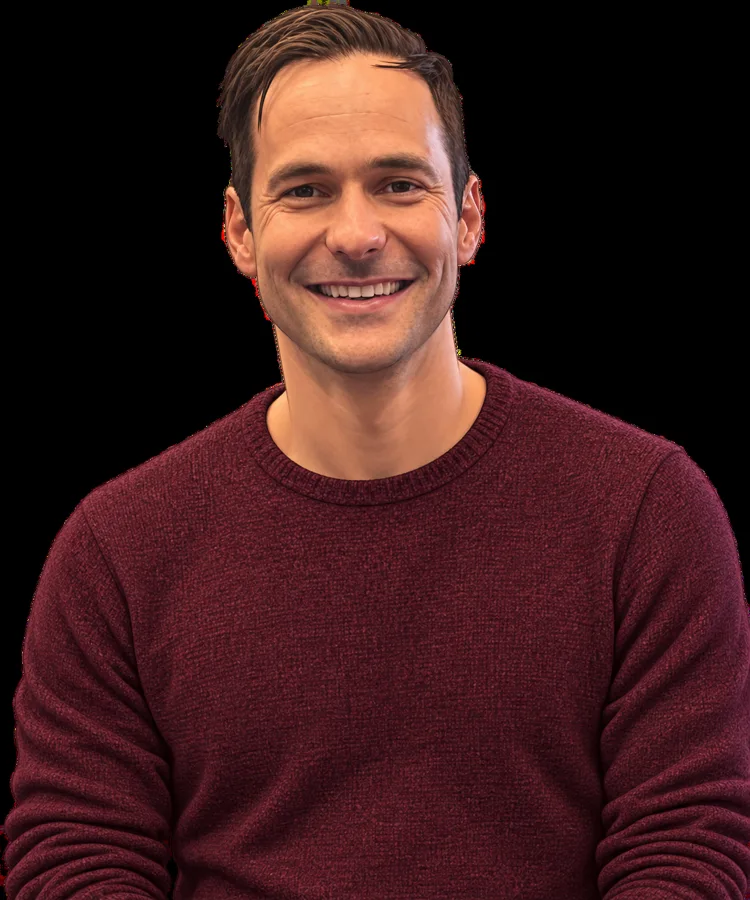
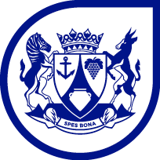
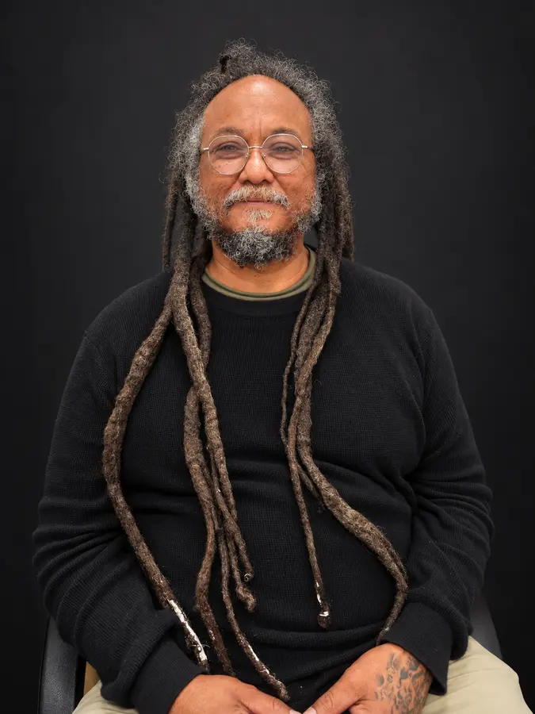
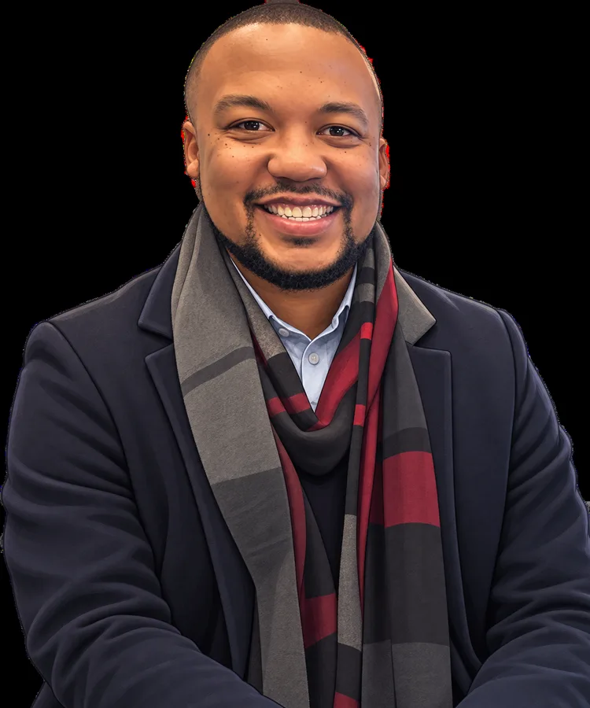
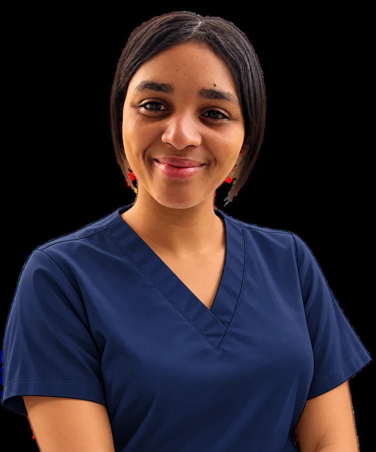
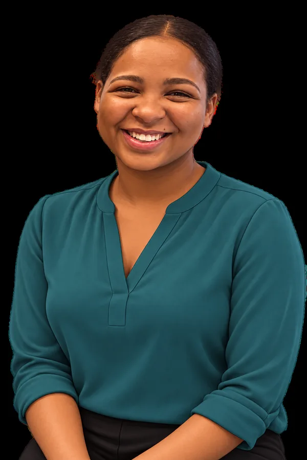
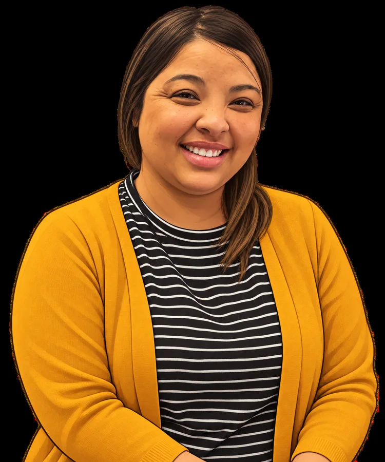

Video pendingFamily physician
Dr Lawson Eksteen
Your mental and physical health
Medical assessment, treatment options and care planning.

Mental Health Awareness Month · October 2026
Support is available at Stellenbosch Hospital and local clinics. Meet the people behind the service and learn when to reach out.
Explore the team ↓Each team member brings a different skill. These are the topics planned for their short videos.

Video pendingFamily physician
Medical assessment, treatment options and care planning.

Video pendingClinical psychologist
Psychological assessment and specialist therapy.

Video pendingRegistered counsellor
Brief counselling, coping skills and early support.

Video pendingMental health nurse
Symptom monitoring, medication effects and crisis support.

Video pendingOccupational therapist
Routines, self-care and returning to everyday activities.

Video pendingSocial worker
Family, safety and practical community resources.
You do not need the right words. Tell us what has been difficult, and we can discuss the next step together.
Feeling anxious, on edge or unable to switch off.
This may include racing thoughts, a pounding heart, shortness of breath, poor sleep or avoiding situations because of fear.
Feeling down, withdrawn, hopeless or grieving.
You may notice low energy, changes in sleep or appetite, losing interest in things, tearfulness or difficulty coping after a loss.
Pressure at home, work, school or in relationships.
Support can help with conflict, separation, parenting strain, work pressure, school difficulties or major life changes.
Concerns about your own use or someone close to you.
Reach out if alcohol or drug use is affecting health, relationships, work, safety or your ability to cope.
Struggling after violence or a frightening event.
Possible signs include nightmares, unwanted memories, feeling constantly alert, avoiding reminders, feeling numb or not feeling safe.
Symptoms, medication concerns or difficulty with daily life.
Ask for help if symptoms have changed, medication is causing concern, appointments were missed or daily tasks are becoming difficult.
Ask a healthcare worker at your clinic or Stellenbosch Hospital about mental health support.
You can also ask for mental health support at Stellenbosch Hospital.